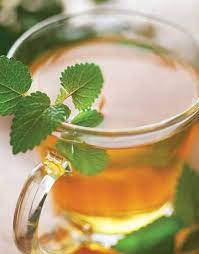

Aragorn's Athelas Tea Recipe

Description
Serve to any Man, Hobbit, or Dwarf (Elves don’t get sick, remember?) suffering from congestion, sore throat, dry cough or Morgul blades.
Ingredients
-
Juice of 2 lemons
-
3-4 1/2 inch coins of fresh Ginger
-
1 clove of garlic (“You *must* trust Master..”)
-
3 sprigs of Mint (approx. 7-10 leaves)
-
2L. Filtered water, boiling
-
Unpasteurised Honey
-
Echinaccia extract, liquid
Instructions
-
Place Ginger, Mint and Garlic(peeled, but not crushed!) in a cheesecloth and tie off.
-
Add to boiling water and cook for 5-7 min.
-
Turn off heat and add lemon juice.
-
Remove spices and transfer to an insulated tea pot.
-
Into each cup, add a tsp. of honey(or to taste), and echinaccia extract to the bottle’s instructions.